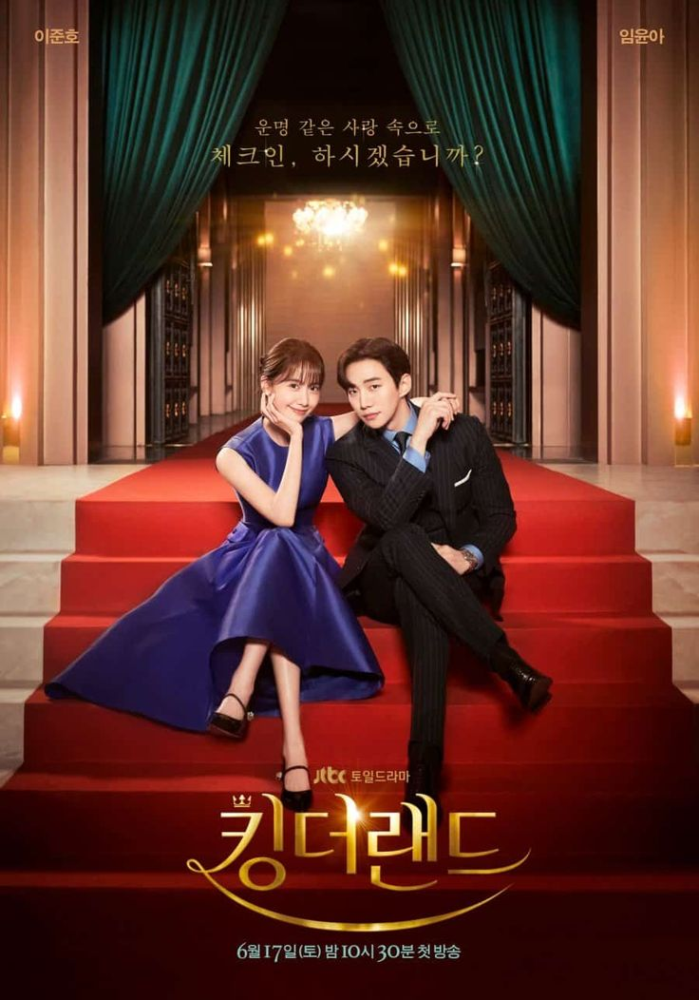

Ю Хён-у более 10 лет работал на богатое семейство, которое владеет корпорацией «Сунъян», но они совершенно незаслуженно обвинили его в растрате. Когда мужчину убивают, он внезапно оказывается в теле младшего сына семейства. Ю Хён-у решает воспользоваться ситуацией, чтобы отомстить.
Ю Хён-у более 10 лет работал на богатое семейство, которое владеет корпорацией «Сунъян», но они совершенно незаслуженно обвинили его в растрате. Когда мужчину убивают, он внезапно оказывается в теле младшего сына семейства. Ю Хён-у решает воспользоваться ситуацией, чтобы отомстить.
 Жизнь старшеклассницы пошла под откос, когда одноклассники стали над ней издеваться. Девушка мечтала стать архитектором, но ей пришлось бросить школу из-за буллинга. Прошло время, школьница выросла, но идею отомстить не оставила. Все эти годы она дожидалась, пока её главная мучительница обзаведётся семьёй, и теперь наша мстительница — учитель её ребёнка.
Жизнь старшеклассницы пошла под откос, когда одноклассники стали над ней издеваться. Девушка мечтала стать архитектором, но ей пришлось бросить школу из-за буллинга. Прошло время, школьница выросла, но идею отомстить не оставила. Все эти годы она дожидалась, пока её главная мучительница обзаведётся семьёй, и теперь наша мстительница — учитель её ребёнка.
 История романтических отношений между наследником корпорации и обычной сотрудницей отеля.